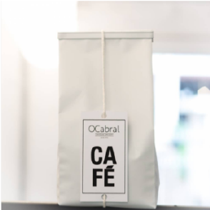

OCafe
Café Bolsas Embalagens blog
Págia Principal/Cafés
Café

IBITIRAMA | ES
IBITIRAMA | ES | BRASIL SITIO TERRA ALTA Produtor: LIMA DELEON Variedade: OEIRAS Processo: NATURAL Altitude: 1000m Torrador: TRENTINO CAFÉS ESPECIAIS Notas: Frutas amareladas, jaca madura 250gr